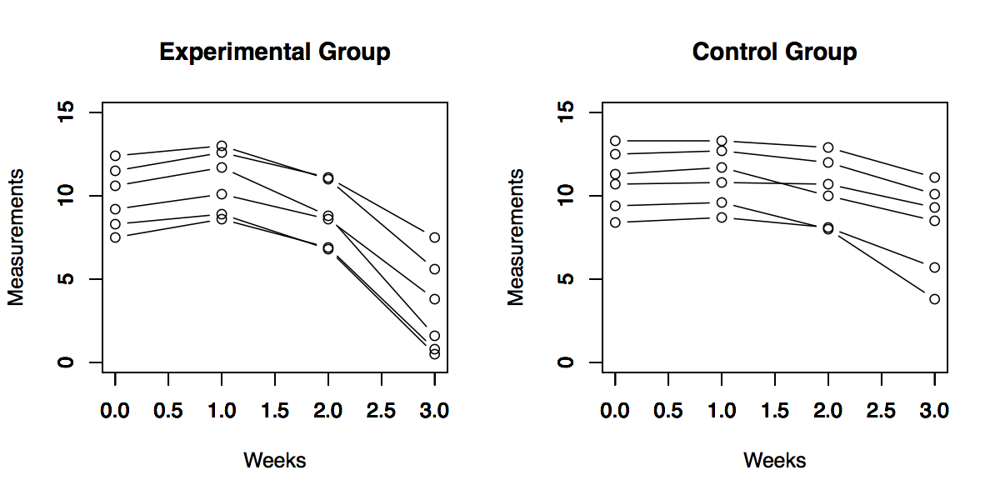
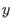
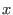
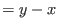
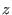
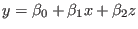
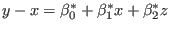
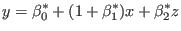

Next: 分散分析モデルから治療効果を学ぶ Up: 経時的繰り返し測定デザイン Previous: 経時的繰り返し測定デザインとは
以下の2種類の薬剤を比較した動物実験の検査データを用いる。
> data2.1 <- read.csv("tab2.1.dat")
> data2.1
id group t0 t1 t2 t3
1 1 1 7.5 8.6 6.9 0.8
2 2 1 10.6 11.7 8.8 1.6
3 3 1 12.4 13.0 11.0 5.6
4 4 1 11.5 12.6 11.1 7.5
5 5 1 8.3 8.9 6.8 0.5
6 6 1 9.2 10.1 8.6 3.8
7 7 0 13.3 13.3 12.9 11.1
8 8 0 10.7 10.8 10.7 9.3
9 9 0 12.5 12.7 12.0 10.1
10 10 0 8.4 8.7 8.1 5.7
11 11 0 9.4 9.6 8.0 3.8
12 12 0 11.3 11.7 10.0 8.5

時点ごとのデータを比較するのは，時点間相関が大きいときは検定力が低くなる。（要チェック）
> # 解析例1：測定時点ごとにt検定（表2.2）
> t.test(t0~group, data=data2.1, var.equal=T)
Two Sample t-test
data: t0 by group
t = 0.93962, df = 10, p-value = 0.3696
alternative hypothesis: true difference in means is not equal to 0
95 percent confidence interval:
-1.394178 3.427511
sample estimates:
mean in group 0 mean in group 1
10.933333 9.916667
> t.test(t1~group, data=data2.1, var.equal=T)
Two Sample t-test
data: t1 by group
t = 0.29886, df = 10, p-value = 0.7712
alternative hypothesis: true difference in means is not equal to 0
95 percent confidence interval:
-2.044238 2.677571
sample estimates:
mean in group 0 mean in group 1
11.13333 10.81667
> t.test(t2~group, data=data2.1, var.equal=T)
Two Sample t-test
data: t2 by group
t = 1.2624, df = 10, p-value = 0.2355
alternative hypothesis: true difference in means is not equal to 0
95 percent confidence interval:
-1.083806 3.917140
sample estimates:
mean in group 0 mean in group 1
10.283333 8.866667
> t.test(t3~group, data=data2.1, var.equal=T)
Two Sample t-test
data: t3 by group
t = 2.9475, df = 10, p-value = 0.0146
alternative hypothesis: true difference in means is not equal to 0
95 percent confidence interval:
1.167419 8.399247
sample estimates:
mean in group 0 mean in group 1
8.083333 3.300000
> # 解析例2：CFB (change from baseline)
> attach(data2.1)
> data2.1$diff01 <- t0-t1
> data2.1$diff02 <- t0-t2
> data2.1$diff03 <- t0-t3
> detach(data2.1)
>
> t.test(diff01~group, data=data2.1, var.equal=T)
Two Sample t-test
data: diff01 by group
t = 6.0622, df = 10, p-value = 0.0001216
alternative hypothesis: true difference in means is not equal to 0
95 percent confidence interval:
0.4427167 0.9572833
sample estimates:
mean in group 0 mean in group 1
-0.2 -0.9
> t.test(diff02~group, data=data2.1, var.equal=T)
Two Sample t-test
data: diff02 by group
t = -1.2006, df = 10, p-value = 0.2576
alternative hypothesis: true difference in means is not equal to 0
95 percent confidence interval:
-1.1423415 0.3423415
sample estimates:
mean in group 0 mean in group 1
0.65 1.05
> t.test(diff03~group, data=data2.1, var.equal=T)
Two Sample t-test
data: diff03 by group
t = -4.0646, df = 10, p-value = 0.00227
alternative hypothesis: true difference in means is not equal to 0
95 percent confidence interval:
-5.831489 -1.701845
sample estimates:
mean in group 0 mean in group 1
2.850000 6.616667
多施設共同臨床試験では，評価項目のベースラインデータ，施設，ベースライン時点のその他の交絡因子などを共変量として調整するANCOVAが常套手段となっている。
評価時点のデータ  をベースラインデータ  で調整するのと，CFB（ ）をベースラインデータ で調整するのでは，調整された効果の大きさ adjusted effect size は同じであることに注意。
共変量を ，グループ変数を  とする。
評価時点のデータを用いた
|  |
に対してCFBを用いた
|  |
を考えると，
|  |
であるから，
となる。
> # 解析例3：ANCOVA
> fit2.1.01 <- glm(t3~group+t0+group:t0, data=data2.1) # 交互作用あり
> summary(fit2.1.01)
Call:
glm(formula = t3 ~ group + t0 + group:t0, data = data2.1)
Deviance Residuals:
Min 1Q Median 3Q Max
-2.50792 -0.69923 -0.07727 1.09259 2.32798
Coefficients:
Estimate Std. Error t value Pr(>|t|)
(Intercept) -6.5516 4.5683 -1.434 0.1894
group1 -1.8732 6.0917 -0.307 0.7663
t0 1.3386 0.4130 3.241 0.0119 *
group1:t0 -0.1562 0.5751 -0.272 0.7928
---
Signif. codes: 0 ‘***’ 0.001 ‘**’ 0.01 ‘*’ 0.05 ‘.’ 0.1 ‘ ’ 1
(Dispersion parameter for gaussian family taken to be 2.901406)
Null deviance: 147.649 on 11 degrees of freedom
Residual deviance: 23.211 on 8 degrees of freedom
AIC: 51.971
Number of Fisher Scoring iterations: 2
> fit2.1.02 <- glm(t3~group+t0, data=data2.1) # 有意でない交互作用を外す
> summary(fit2.1.02)
Call:
glm(formula = t3 ~ group + t0, data = data2.1)
Deviance Residuals:
Min 1Q Median 3Q Max
-2.55964 -0.78068 0.04258 0.95311 2.20815
Coefficients:
Estimate Std. Error t value Pr(>|t|)
(Intercept) -5.6709 3.0484 -1.860 0.09577 .
group1 -3.5044 0.9717 -3.606 0.00569 **
t0 1.2580 0.2722 4.621 0.00125 **
---
Signif. codes: 0 ‘***’ 0.001 ‘**’ 0.01 ‘*’ 0.05 ‘.’ 0.1 ‘ ’ 1
(Dispersion parameter for gaussian family taken to be 2.602817)
Null deviance: 147.649 on 11 degrees of freedom
Residual deviance: 23.425 on 9 degrees of freedom
AIC: 50.081
Number of Fisher Scoring iterations: 2
>
> par(mfrow=c(1,1))
> plot(t3~t0, data=data2.1[1:6,], xlim=c(0,15),ylim=c(0,15), pch=1, xlab="", ylab="")
> par(new=T)
> plot(t3~t0, data=data2.1[7:12,], xlim=c(0,15),ylim=c(0,15), pch=2, xlab="Week 0", ylab="Week 3")
> lines(data2.1$t0[1:6],predict(fit2.1.02)[1:6])
> lines(data2.1$t0[7:12],predict(fit2.1.02)[7:12])
Taichi Okumura